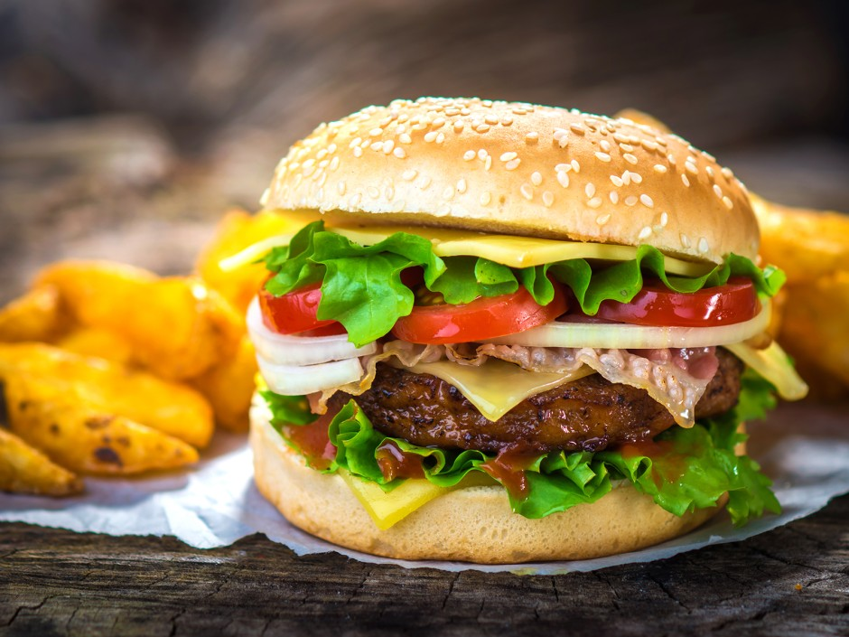

Burger
Description
A burger, also known as a hamburger, is a popular and versatile dish that
consists of a cooked patty of ground meat, typically beef, placed between
two halves of a bread roll or bun. It is
a staple of fast food and casual dining,
enjoyed around the world in various forms

Ingridients
For the Patties:
- 1 pound (450 grams) ground beef (preferably 80% lean and 20% fat)
- 1 teaspoon salt
- 1/2 teaspoon ground black pepper
- 1/2 teaspoon garlic powder
- 1/2 teaspoon onion powder
- 1 tablespoon Worcestershire sauce (optional)
For Assembling the Burgers:
- 4 burger buns
- 4 cheese slices (cheddar, American, or your choice)
- 4 lettuce leaves
- 1 large tomato, sliced
- 1 small onion, sliced
- Sliced pickles
- Ketchup to taste
- Mustard to taste
- Mayonnaise to taste
Steps to Prepare
- Prepare the Patties:
- In a large mixing bowl, combine ground beef, salt, pepper, garlic powder, onion powder, and Worcestershire sauce (if using). Mix gently until just combined; do not overwork the meat.
- Divide the mixture into 4 equal portions and shape each portion into a patty about 3/4 inch thick. Make a slight indentation in the center of each patty with your thumb to prevent the burgers from puffing up during cooking.
- Cook the Patties:
- Preheat a grill or a skillet over medium-high heat. If using a skillet, add a small amount of oil to prevent sticking.
- Cook the patties for about 3-4 minutes on each side for medium doneness. Adjust the cooking time for your preferred level of doneness.
- During the last minute of cooking, place a slice of cheese on each patty to melt. Cover the grill or skillet with a lid to help the cheese melt evenly.
- Toast the Buns:
- While the patties are cooking, lightly toast the burger buns on the grill or in a toaster.
- Assemble the Burgers:
- Spread mayonnaise on the bottom half of each toasted bun.
- Place a lettuce leaf on each bun, followed by a cooked patty with melted cheese.
- Add tomato slices, onion slices, and pickles on top of the patty.
- Spread ketchup and mustard on the top half of the bun.
- Place the top bun over the assembled ingredients.
- Serve:
- Serve the burgers immediately with your favorite sides such as fries, coleslaw, or a salad.
Index Page